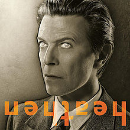
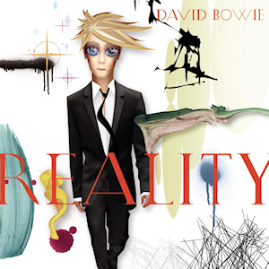
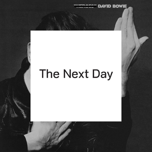

Bowie Remembered (Part Five): A Life Eternal
David Bowie never had to make a "comeback", and yet the general media coined it as such after a ten-year absence with the release of The Next Day. The Next Day, as was his final record Blackstar, were two of his most revealing records yet, both of which bookended his eighteen-month battle with cancer.
...
Heathen (2002)
Bowie’s identity as a New Yorker was never concrete- where the transgressiveness of contemporaries like Lou Reed and the New York Dolls was directly tied to their origins in the city’s underbelly, Bowie’s was an alien presence that wasn’t in tune with the Stonewall or CBGB scenes where he was so influential. Still, the man lived the last two decades of his life in downtown Manhattan, so it was inevitable that his first album after 9/11 would carry its mark.
Much like Wilco’s Yankee Hotel Foxtrot, Heathen is an album frequently associated with the attack, despite its creator’s insistence that it was written beforehand. Bowie claimed that the spiritual searching of the lyrics was inspired by a general feeling of anxiety about the state of America, hardly a stretch for the man who wrote I’m Afraid of Americans. Still, the record contains some of the most direct, even uplifting writing of Bowie’s career - opening track Sunday climaxes with him pleading “In your fear, seek only peace / In your fear, seek only love,” while Afraid references John Lennon’s God in an attempt to channel that song’s expression of faith. Musically, the album is as straightforward as latter-day Bowie comes, sometimes to the album’s detriment.
In retrospect, that quality of Heathen makes the creative revitalization of The Next Day and Blackstar even more impressive - Bowie could have ridden his legacy and made above-average modern rock albums until he died, but he left us with music just as forward-thinking as that of his prime. Even in the twilight of his career, Bowie could never play it safe. - Bradley Hanford
Reality (2003)
Long before David Bowie released his 24th album in 2003, he had already cemented himself as one of the most influential, groundbreaking artists ever to play the game, and even after almost four decades, Reality showed that his music remained inexorably unique. You could argue a case that after such a stint, it would be easy for an artist even as celebrated as Bowie to start to meander lazily, filtering his new ideas through a trend-grabbing sieve before churning out another album.
In all seriousness, though, that was never going to happen. The scale of his influence was built on the foundation of always being a step ahead of the game, with absolute confidence in his own virtuosity, and the ability to fashion his ideas into something new and affecting. Reality is a superbly structured album, beautifully balanced with an invigorating, honest delivery. It is characteristically convincing, and busy from start to finish whilst reveling in a cunning simplicity. By this point, David Bowie had proven that he was more than just a gleaming, revered star, but a constellation that had influenced music more than most others before him. - Carl Purvis
The Next Day (2013)
It’s easy to take for granted now that, for a while there, it seemed like we may have never gotten another David Bowie album again. For the past decade before its release, Bowie had nary made a peep in the music world, having decided to mostly stay out of the limelight and lay low. Little did we know, however, that the beloved artist was merely waiting to catch us off guard, and with the surprise release of the elegant “Where Are We Now” on his 66th birthday, the secret was out: Bowie was back.
What made The Next Day such a welcomed surprise – one Bowie went all out to keep secret – is that this comeback album is not just an aging rock icon trying to repeat past glories by treading old ground or making Ziggy Stardust 2: Keep Ziggin’, but the work of an artist exercising purely in great song-craft. And from the sleezy horn skronk of Dirty Boys to the miniature epic The Stars (Are Out Tonight), to the rollicking hysteria of If You Can See Me, Bowie works his songwriting muscle in nearly every direction he can, all while keeping the album remarkably consistent and undeniably catchy. So damn us for thinking Bowie was just getting lazy, as The Next Day made all that lost time feel more than worthwhile. - Peter Quinton
 ★ (2016)
★ (2016)
What else can be said about Blackstar that hasn’t been expounded upon in numerous post-mortem op-eds, thinkpieces, and articles? The final chapter to Bowie’s illustrious, decade-spanning career is truly an eclectic quagmire of fusion, experimental electronics, and first-rate balladry. Longtime producer Tony Visconti adapts to the crossfire of dissonant crescendo, allowing Bowie’s vocals hang ominously in the background as trumpets and electric guitars blare cacophonously.
Of course, Bowie was always a collaborator at heart. The focused undertone of krautrock and jazz is successfully held in place by a group of New York City session players led by Donny McCaslin, while LCD Soundsystem’s own James Murphy contributes percussion on at least two tracks. Even without the context of Bowie’s battle with cancer, Blackstar would still be heralded as a grand finale to one of the most illustrious bodies of work in musical history. - Joseph Moore